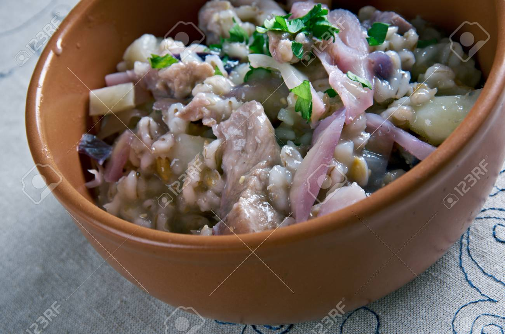
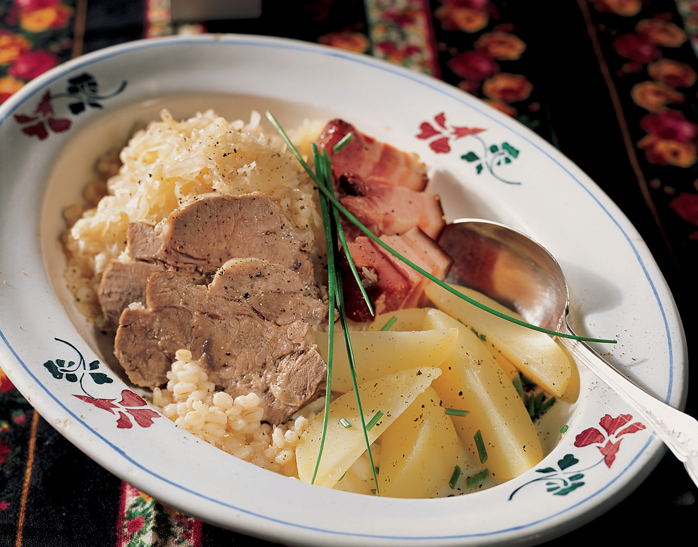
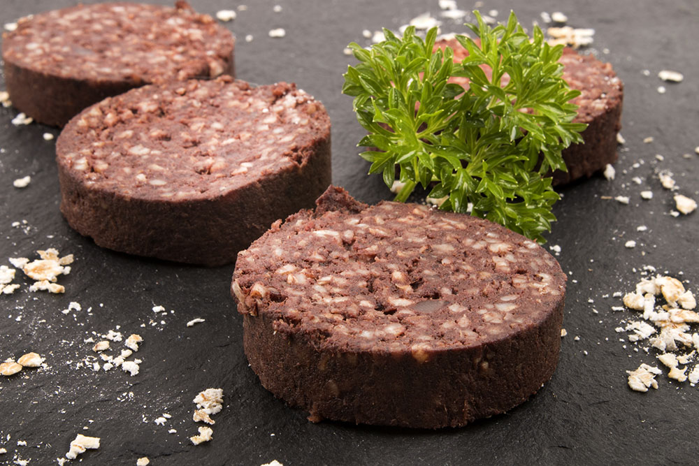
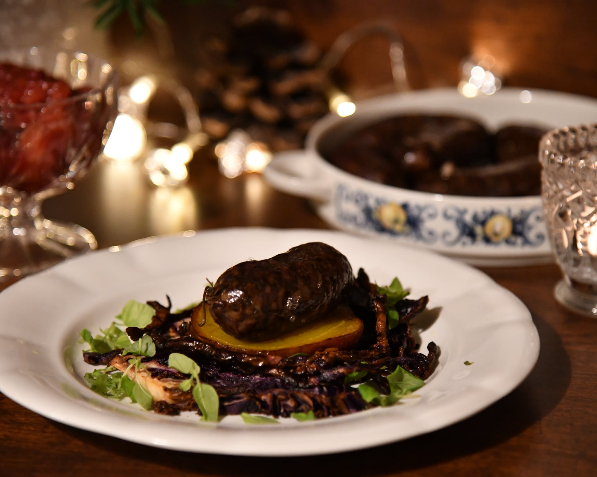
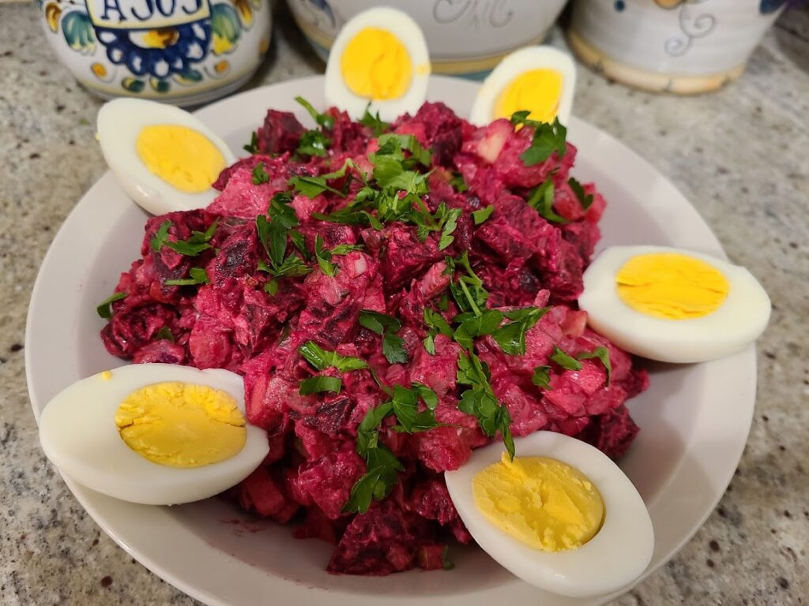
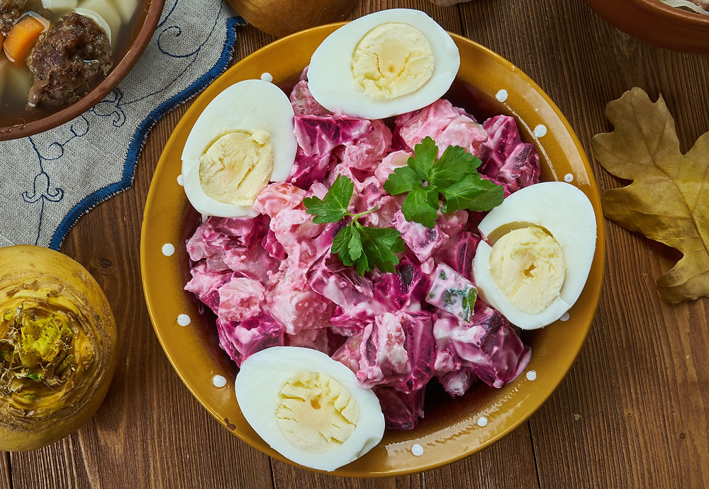
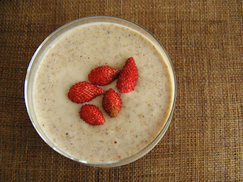
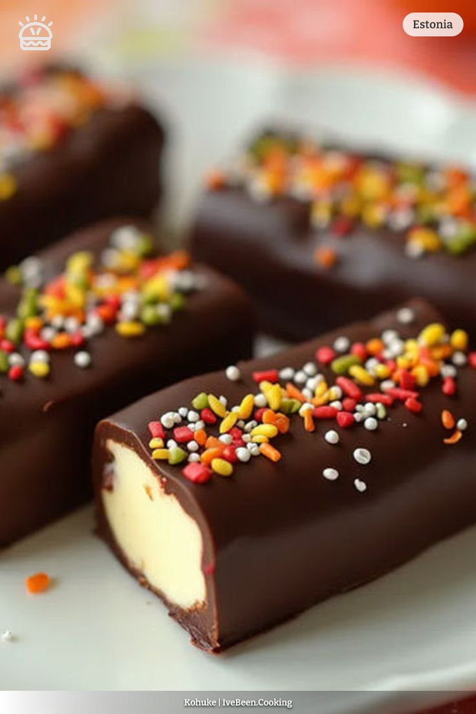
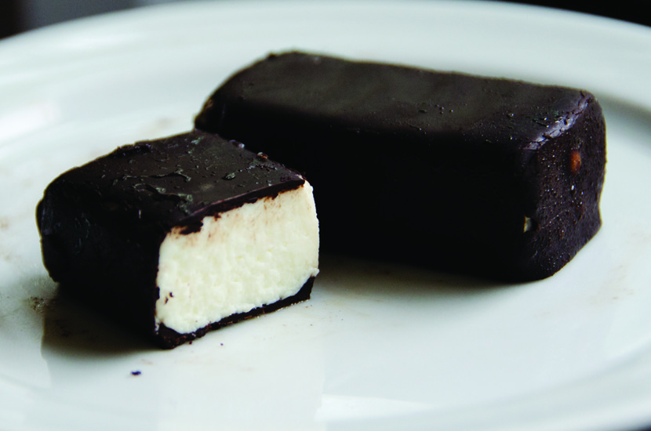

Kiluvõileib is a true taste of Estonia’s seaside soul. This open-faced sandwich pairs dark rye bread with silky spiced sprats, boiled
egg, butter, and fresh herbs, creating a perfect balance of salty, rich, and earthy flavors. Simple yet deeply traditional, it’s a
classic found at celebrations and everyday tables alike. For travelers, kiluvõileib is more than a snack — it’s a bite of Estonia’s
history, shaped by the sea and enjoyed with quiet pride.
Mulgikapsad


Mulgikapsad is a classic Estonian dish that combines sauerkraut and pork, often slowly stewed with barley or potatoes for a hearty,
comforting meal. Originating from the southern region of Estonia called Mulgi, it carries the rustic flavors of traditional Estonian
home cooking. Rich, tangy, and satisfying, Mulgikapsad gives travelers a true taste of Estonia’s culinary heritage, especially during
the colder months when its warmth and depth of flavor shine the most.
Verivorst


Verivorst is a traditional Estonian blood sausage, especially popular during the winter holidays, including Christmas. Made from a
mixture of blood, barley, and spices, it has a rich, hearty flavor that reflects Estonia’s rustic culinary traditions. Typically
served with sauerkraut, lingonberry jam, or potatoes, Verivorst is a comforting dish that offers a taste of Estonian heritage, perfect
for travelers looking to experience authentic local flavors with a touch of seasonal festivity.
Rosolje


Rosolje is a traditional Estonian salad, known for its vibrant layers and sweet-sour flavors. Typically made with diced beets, potatoes,
pickles, herring, apples, and a creamy dressing, it’s a festive dish often served during holidays and celebrations. Its colorful
presentation reflects the cheerful spirit of Estonian cuisine, while each bite combines earthy, tangy, and slightly sweet flavors,
giving travelers a delicious glimpse into Estonia’s culinary traditions.
Kama

Kama is a traditional Estonian staple that captures the essence of the country’s rustic heritage. Made from a finely milled blend of
roasted barley, rye, oat, and sometimes pea flour, it has a nutty, wholesome flavor that’s both comforting and versatile. Traditionally
mixed with milk or yogurt, and often sweetened with honey or berries, Kama can be enjoyed as a breakfast, dessert, or snack. It’s more
than just food—it’s a taste of Estonia’s agrarian past, offering travelers a simple yet deeply cultural culinary experience.
Kohuke


Kohuke is a beloved Estonian sweet treat, perfect for a quick indulgence or snack. These small curd cheese bars are coated in chocolate
and sometimes filled with creamy or fruity centers, offering a delightful combination of smooth, sweet, and slightly tangy flavors.
Popular among locals and visitors alike, kohuke reflects Estonia’s love for simple yet satisfying confections, making it a must-try for
anyone wanting a taste of authentic Estonian sweetness.